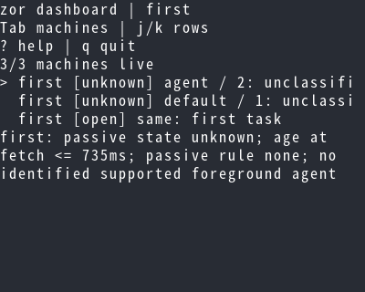
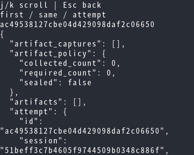
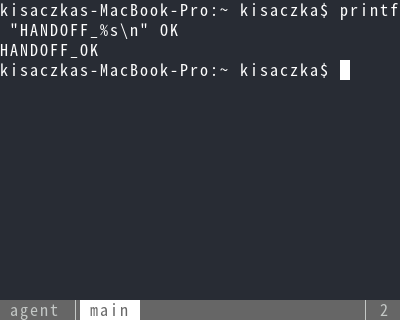
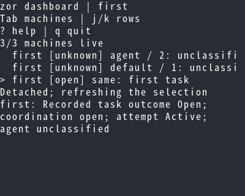
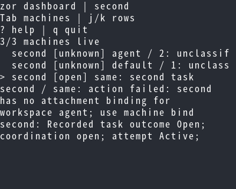
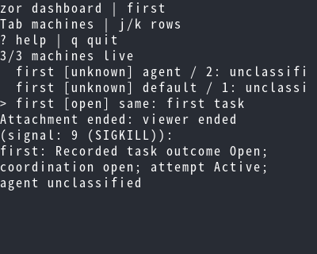
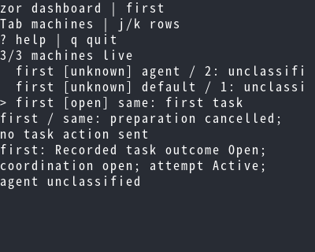
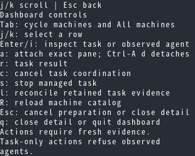

fux Betamax evidence
Captured test checkpoints. Rendering alone is not a visual approval.
terminal-25805-H3iemU/0000.png: 01-machine-scope
terminal-25806-1ssid2/0000.png: 02-inspection
terminal-25807-DpDCiN/0000.png: 03-viewer
terminal-25808-5S3SwZ/0000.png: 04-return
terminal-25809-Lc4st9/0000.png: 05-missing-binding
terminal-25810-ADVw66/0000.png: 06-viewer-killed
terminal-25811-liw18t/0000.png: 07-preparation-cancelled
terminal-25821-bgCwX5/0000.png: 12-help